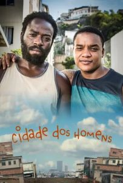

Sobre a Série
| Sinopse
Cidade dos Homens é uma série de televisão coproduzida pela TV Globo e O2 Filmes, sendo exibida durante quatro temporadas, de 15 de outubro de 2002 até 16 de dezembro de 2005 e um spin-off de duas temporadas até o momento. A série se chamaria Cidade do Tráfico mas foi vetado pelo conselho artístico da emissora. Contou com roteiros de César Charlone, Claudio Galperin, Eduardo Tripa, Elena Soárez, Fernando Meirelles, George Moura, Guel Arraes, Jorge Furtado, Kátia Lund, Leandro Saraiva, Melanie Dimantas, Newton Cannito, Paulo Lins, Paulo Morelli, Pedro Morelli, Regina Casé e Rosa Amanda Strausz. A direção de cada episódio ficou a cargo de diversos diretores, como Adriano Goldman, Cao Hamburger, César Charlone, Eduardo Tripa, Fernando Meirelles, Kátia Lund, Paulo Lins, Paulo Morelli, Pedro Morelli, Phillippe Barcinski, Regina Casé e Roberto Moreira.
• A série contém 4 temporadas (+2 minisséries) e 27 episódios
A série acompanha dois protagonistas, Laranjinha (Darlan Cunha) e Acerola (Douglas Silva), que vivenciam dilemas próprios da adolescência, tanto os universais quanto aqueles relativos aos problemas específicos nas comunidades carentes do Rio de Janeiro. São temas recorrentes o contraste entre ricos e pobres, a problemática do poder paralelo estabelecido pelo tráfico de drogas, a violência urbana, dificuldades financeiras e a cultura das favelas.
Durante a pré-produção das filmagens de Cidade de Deus, Fernando Meirelles foi convidado por Guel Arraes a dirigir um episódio da série Brava Gente. Inicialmente Meirelles recusou, porém mais tarde mudou de ideia, com a condição de que desenvolvesse uma história ligada aos fragmentos da obra de Paulo Lins e com jovens da oficina de atores. Em 28 de dezembro de 2000 foi ao ar o episódio especial de fim de ano, Palace II, adaptado por Bráulio Mantovani com direção de Meirelles e Kátia Lund, ao qual se tornou parte do curta-metragem homônimo, considerado um ensaio para o longa-metragem que Meirelles dirigiu no ano seguinte e estreou em 2002. Com o sucesso do filme, surge a ideia de realizar uma série derivada tendo como protagonistas dois jovens da comunidade. Em 2007, é lançado um longa metragem homônimo retratando os protagonistas com os desafios da maioridade
Racismo Relatados na Série
Críticas do Ator"Eu discuti sobre o roteiro e dizia que tinha pouco questão sobre racismo. Não tem nessa temporada, mas tem os problemas de saúde pública e política. Antigamente tinha um ataque mais direto, hoje não atacamos diretamente, mas falamos do cotidiano do brasileiro. Eu sou motoqueiro, tenho moto, então sofro racismo a cada sinal", explica Darlan, hoje com 28 anos.
Questionado, o ator descarta a possibilidade de ter sofrido preconceito na TV por não emplacar nenhum outro trabalho depois da série. "Não foi nem pela minha cor. Eu era um jovem e não sabia o que eu fazia era por intuição ou se eu amava estar ali mesmo. Por um momento trabalhar não era tão satisfatório, não sabia por que eu estava ali. Rolou uma confusão na transição de adolescente para adulto, precisei desse tempo. De uns anos pra cá, eu vi que o teatro, cinema, televisão e atuar que eu quero fazer. Queria fazer novela agora, seria uma boa", explica.